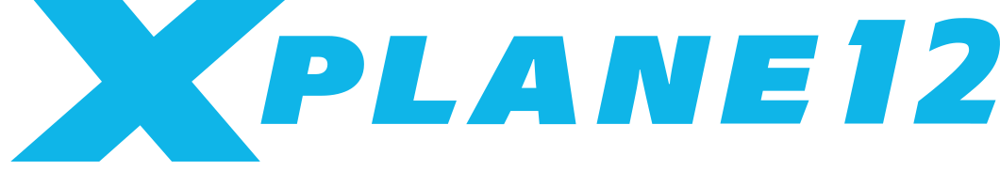
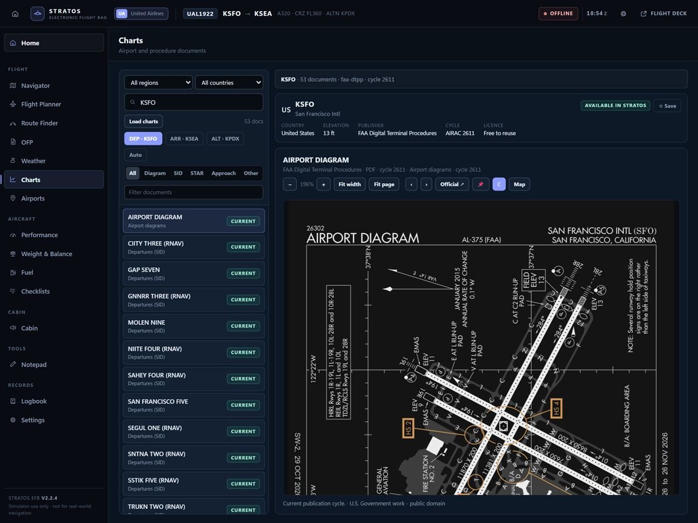
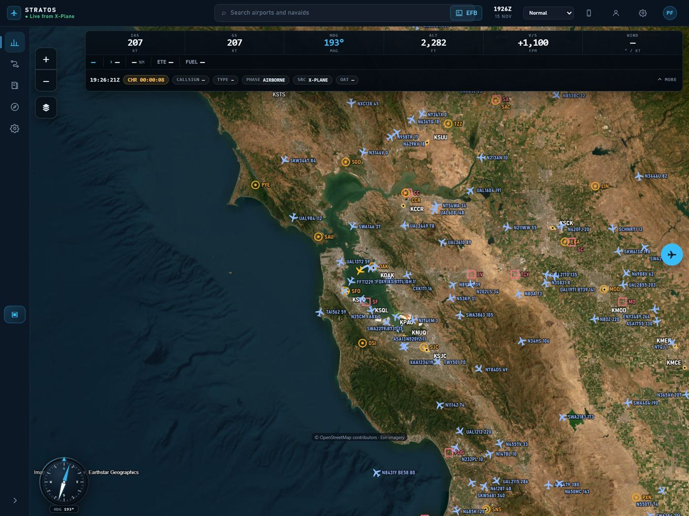
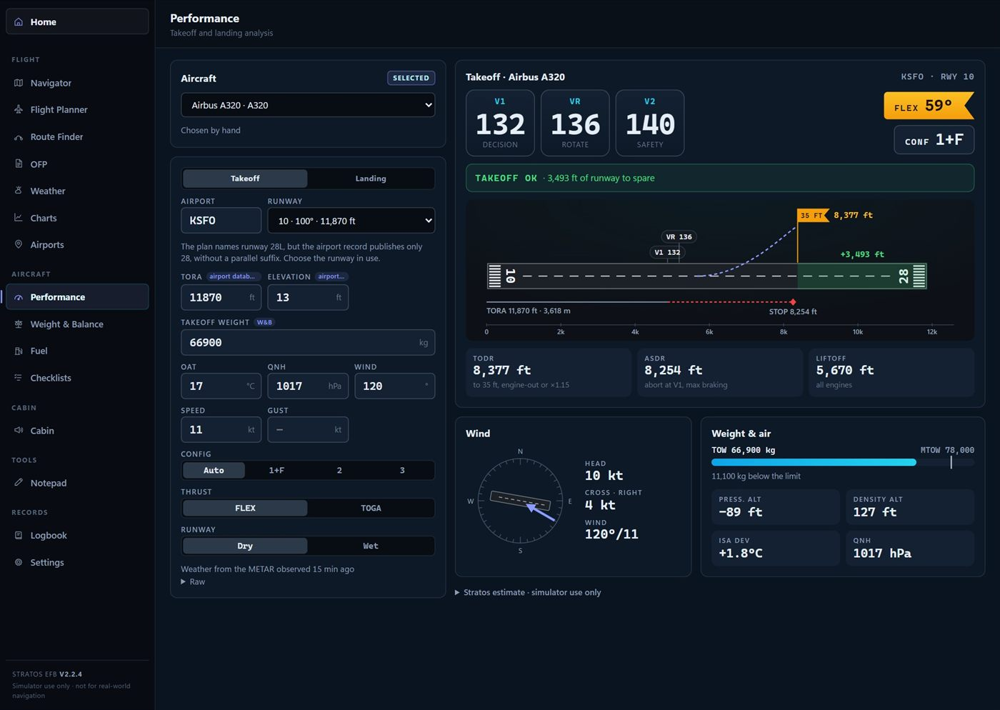

Flight Deck
A live moving map of your flight with the instruments you check most.
- Real-world traffic around you
- Route, SIDs and STARs drawn
- Satellite, chart and globe views
Live tracking, charts, performance, planning and an automatic logbook for X-Plane 11 and 12 and Microsoft Flight Simulator, on your PC, tablet and phone.
Also on macOS, Linux and ChromeOS · or launch it in your browser



Everything a sim pilot reaches for, from the first briefing to the last turn off the runway, working together on the same flight.
A live moving map of your flight with the instruments you check most.
An electronic flight bag laid out like the tablet in a real cockpit.
Every flight saved automatically, with nothing to start or stop.
Your live flight on the phone beside you, built for touch.
Real data, real procedures and a layout that pilots will recognise.
Your aircraft on a live satellite map, with speed, heading, altitude and vertical speed along the top.

Airport diagrams, SIDs, STARs and approaches from the FAA, opened right next to your flight plan.
Estimated V-speeds, flex temperature and runway distances from the runway, the weight and the live weather.

Put your phone next to the yoke and keep the map, the plan and the charts in reach.
Stratos reads published aviation sources directly, so what you brief matches the world outside the window.
Airport diagrams, departures, arrivals and approaches for the United States, updated every cycle.
Drawn leg by leg from FAA CIFP data, or from X-Plane's own navigation data when installed.
Real reports decoded, with wind components for your runway and conditions along the route.
Bring in your flight plan and OFP in one step, and send routes back to the sim as PLN or FMS.
A small bridge built into the desktop app reads your aircraft. It runs on your PC and nothing is exposed to the internet.
Open Stratos and start a flight. It connects on its own, with nothing to install in the sim.
In Settings → Data Output, send rows 3, 17 and 20 over UDP to port 49003 on your PC. Stratos also reads your X-Plane navigation data for SIDs, STARs and ILS.
Start a flight with Stratos open. It connects through SimConnect and finds Prepar3D's own SimConnect library on its own.
No subscription, no trial, no locked features. Stratos is free, and every update is too.
Your PC, your tablet and your phone share the same logbook and flight plan.
The full flight deck, EFB and logbook, with the simulator bridge built in.
Also for macOS (Apple silicon), macOS (Intel) and Linux, or ChromeOS.
A touchscreen version made for the phone beside your yoke, not the desktop shrunk down.
Add it to your home screen and it opens like an app.
Stratos-Setup.exe.Intel or AMD Chromebooks can also run the Linux build.
Yes. Every feature is included, with no subscription, no paid tier and no trial.
Microsoft Flight Simulator 2020 and 2024, X-Plane 11 and 12, Prepar3D and FSX. Stratos detects which one is running and shows it in the top bar.
Charts are the FAA's published terminal procedures, so they cover the United States and its territories in the current cycle. For other countries Stratos links to the official publisher, and you can open a chart PDF you've downloaded yourself.
No. Your logbook is stored on your own PC. An account is only needed to follow your flight from a phone or Chromebook on a different network.
Not unless you pair a phone over the internet. Then your PC sends live snapshots out to a relay and your phone reads them with its own token. Nothing can send commands back to your PC, and you can revoke pairing in Pilot → Settings.
No. Stratos is for flight simulation only and must never be used for real-world navigation.
Download Stratos, start your sim, and your logbook starts with the very next takeoff.